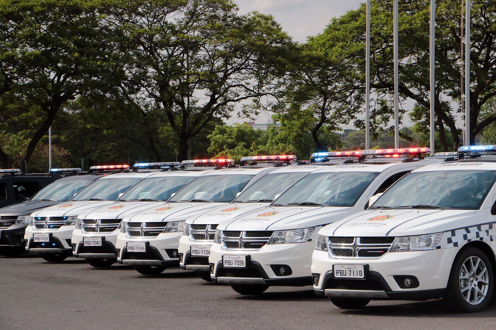

Brazilian military police officer arrested after van shooting leaves woman dead, four injured
The shooting took place in Brasília's Asa Sul district early on November 8. Another police officer was among those wounded; the motive remains under investigation.

What happened
A military police officer in Brazil's Federal District was arrested after shooting at people inside a van in the SQS 302 area of Asa Sul, Brasília, at about 3:40 a.m. on Sunday, November 8, 2026. A 26-year-old woman, identified by Correio Braziliense as Alessandra Andrade, died at the scene, and four other people were injured. According to the Polícia Militar do Distrito Federal (PMDF, Federal District Military Police), around 16 people were returning from a birthday celebration in a hired van. The officer identified by police, Bruno Cardoso dos Passos, was located and arrested by his own force. One of the injured, fellow officer Daniel Aquino, 24, underwent surgery after being shot and remained under observation at Brasília's Hospital de Base, Correio Braziliense reported. Alessandra's funeral viewing was scheduled for Monday, November 9, from 2 p.m. to 4:30 p.m. in Taguatinga. Civil police are investigating the case, and the motive remains unknown.
The Crow's analysis
The shooting raises questions about the handling of firearms and oversight of police conduct while off duty. The arrest reported by the PMDF is an initial step, not a substitute for determining the exact sequence of events and legal responsibility. News reports have described a possible argument, but such accounts do not, on their own, establish the motive. Future reporting should track the injured victims' recovery and the findings of investigators and courts.
Counterpoint
The PMDF said it does not condone the conduct and announced criminal, disciplinary and administrative measures. Those statements do not replace an independent civil-police investigation or amount to a final determination of what happened. The arrested officer is entitled to due process. The accompanying 2019 archive photograph shows PMDF patrol vehicles at a handover ceremony; it does not depict the van, suspect, victims or November 8 shooting.
Sources
- Agência Brasil — PM atira em van e mata uma mulher em Brasília (08/11/2026)
- Correio Braziliense — PM que matou mulher atingiu outro policial na cabeça e a própria namorada (08/11/2026)
- Correio Braziliense — Corpo de jovem morta por PM será velado nesta segunda (08/11/2026)
- Metrópoles — Policial militar é preso após atirar em amigos e matar mulher na Asa Sul (08/11/2026)